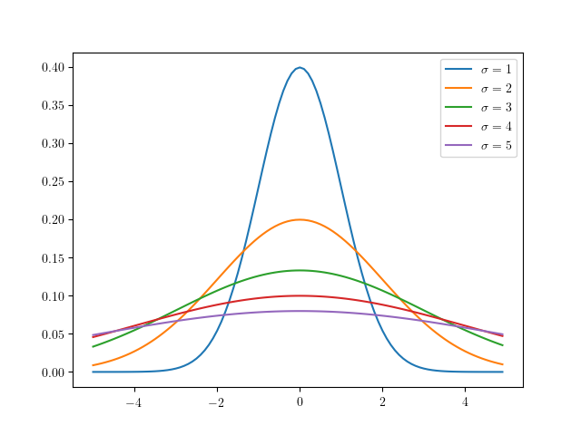

この記事は,
旧ブログ から移植された記事です. よって, その内容として,
旧ブログ に依存した文脈が含まれている可能性があります. 予めご了承下さい.
当ブログ内では,
既に確率論の話題としてベイズの定理 のエントリが存在するが,
今後同様にして確率論の話題を本ブログで取り上げる際に,
用語へのリファレンスを self-contained で張れるよう, 本エントリにて一度整理しておくこととした.
目次
確率の定義
古典的確率 統計的確率 公理的確率 基本的な言葉 不偏分散 正規分布, ガウス分布 大数の法則 中心極限定理 参考文献
確率の定義
そもそも一言に「確率」といえども, それは古典的確率, 統計的確率, 公理的確率というように大別できる.
古典的確率
古典的確率は, Ω \Omega Ω
統計的確率
統計的確率は, 「Ω \Omega Ω
公理的確率
公理的確率とは, 確率の公理により定義された確率であり, 同公理における理論体系上では各事象の発生する確率が異なるものをも扱うことができる.
この確率の公理では集合論, 測度論の言葉が使われるが, 同理論に関して深堀りすると本エントリの主題から大きく逸れてしまうため,
ここではあまり深くは触れずに持ち出すこととしている.
集合のあつまりを一般に集合族というが, 次に示すのはその 1 種である.
標本空間
Ω \Omega Ω の部分集合族
F \mathcal{F} F が次の 3 つの性質を満足するとき,
F \mathcal{F} F は
σ \sigma σ -加法族という.
∅ ∈ F \emptyset\in \mathcal{F} ∅ ∈ F
A ∈ F ⇒ A c ∈ F A\in\mathcal{F}\Rightarrow A^{c}\in\mathcal{F} A ∈ F ⇒ A c ∈ F
A 1 , A 2 , ⋯ ∈ F ⇒ ⋃ i = 1 ∞ A i ∈ F \displaystyle A_1,A_2,\cdots\in\mathcal{F}\Rightarrow \bigcup^{\infty}_{i=1}A_i \in\mathcal{F} A 1 , A 2 , ⋯ ∈ F ⇒ i = 1 ⋃ ∞ A i ∈ F
ここで, A c A^{c} A c A A A
σ \sigma σ σ \sigma σ
σ \sigma σ -加法族
F \mathcal{F} F 上の関数
P P P が次の 3 つの性質を満足するとき,
P P P を確率関数という.
0 ≤ P ( A ) ≤ 1 , ∀ A ∈ F 0\leq P(A)\leq 1,\ ^\forall A\in\mathcal{F} 0 ≤ P ( A ) ≤ 1 , ∀ A ∈ F
P ( Ω ) = 1 P(\Omega) = 1 P ( Ω ) = 1
A 1 , A 2 , ⋯ ∈ F A_1,A_2,\cdots\in\mathcal{F} A 1 , A 2 , ⋯ ∈ F ⋂ i = 1 ∞ A i = ∅ \displaystyle \bigcap^{\infty}_{i=1}A_i = \emptyset i = 1 ⋂ ∞ A i = ∅ ⇒ P ( ⋃ i = 1 ∞ A i ) = ∑ i = 1 ∞ P ( A i ) \displaystyle\Rightarrow P(\bigcup_{i=1}^\infty A_i)=\sum_{i=1}^\infty P(A_i) ⇒ P ( i = 1 ⋃ ∞ A i ) = i = 1 ∑ ∞ P ( A i )
可算無限個の事象が互いに排反な事象の和集合の値は, 各事象の値の和となる.
なお, 標本空間を Ω = x 1 , x 2 , ⋯ , x n \Omega ={x_1,x_2,\cdots,x_n} Ω = x 1 , x 2 , ⋯ , x n p 1 , … , p n p_1,\dots,p_n p 1 , … , p n 0 ≤ p i ≤ 1 \displaystyle 0\leq p_{i}\leq 1 0 ≤ p i ≤ 1 ∑ i = 1 n p i = 1 \displaystyle \sum_{i=1}^{n}p_{i}=1 i = 1 ∑ n p i = 1 Ω \Omega Ω A A A P P P P ( A ) = ∑ i ∣ x i ∈ A p i P(A)=\displaystyle\sum_{{i\ |\ x_i\in A}}p_i P ( A ) = i ∣ x i ∈ A ∑ p i P P P
基本的な言葉
用語
意味
表現
標本空間
試行に付随して決まる, 試行の取りうるすべての結果から成る ∅ \emptyset ∅
Ω \Omega Ω
標本
標本空間の元. 試行の結果発生しうる個々の事柄.
ω ∈ Ω \omega\in\Omega ω ∈ Ω
事象
標本空間の部分集合. 試行の結果発生しうる事柄.
A ⊂ Ω A\subset\Omega A ⊂ Ω
確率変数
ある事象が確率的に取りうる数.
確率変数 X X X x 1 , x 2 , ⋯ x_1, x_2,\cdots x 1 , x 2 , ⋯ p 1 , p 2 , ⋯ p_1, p_2,\cdots p 1 , p 2 , ⋯ X X X x x x R \mathbb{R} R f ( x ) f(x) f ( x )
離散型確率変数でない確率型変数を連続型確率変数という
(ϵ − δ \epsilon-\delta ϵ − δ
X X X
実現値
確率変数がとる具体的な値.
x n x_n x n
確率分布
確率変数がある値となる確率, 又はある集合に属する確率を与える関数 (JIS 規格より).
P ( A ) P(A) P ( A )
「独立同一分布に従う」
確率変数 X 1 , X 2 , ⋯ , X n X_1,X_2,\cdots,X_n X 1 , X 2 , ⋯ , X n 独立 で,
かつそれらが同一の確率分布に従うことをいう.
注意されたいのが, 「独立同一分布」といわれる分布はない.
この用例は, 「独立同一分布」という分布に従うというようにも捉えられるかもしれないが,
そのような意味ではない.
i . i . d \rm i.i.d i.i.d X 1 , X 2 , ⋯ , X n X_1,X_2,\cdots,X_n X 1 , X 2 , ⋯ , X n f ( x 1 , x 2 , ⋯ , x n ) = g ( x 1 ) g ( x 2 ) ⋯ g ( x n ) f(x_1,x_2,\cdots,x_n)=g(x_1)g(x_2)\cdots g(x_n) f ( x 1 , x 2 , ⋯ , x n ) = g ( x 1 ) g ( x 2 ) ⋯ g ( x n )
i . i . d \rm i.i.d i.i.d
全体の総和をそれらの個数で割った値. 1 n ∑ i = 1 n X i \displaystyle\dfrac{1}{n}\sum^{n}_{i=1}X_i n 1 i = 1 ∑ n X i
確率変数 X X X X ‾ \overline{X} X
母平均: μ \mu μ
期待値
確率変数のとりうる値にそれが起こる確率を掛けた値の総和のこと(加重平均).
すなわち, 確率変数 X X X x x x P ( x i ) P(x_i) P ( x i ) { ∑ i = 1 n x i P ( x i ) : X は離散的確率変数 ∫ − ∞ ∞ x P ( x ) d x : X は連続的確率変数
\begin{cases}
\displaystyle\sum^{n}_{i=1}x_i P(x_i) &:X {\rm は離散的確率変数}\\
\displaystyle\int^\infty_{-\infty} xP(x)dx &:X {\rm は連続的確率変数}
\end{cases} ⎩ ⎨ ⎧ i = 1 ∑ n x i P ( x i ) ∫ − ∞ ∞ x P ( x ) d x : X は離散的確率変数 : X は連続的確率変数
離散, 連続共に和の期待値は期待値の和(期待値の線形性):
E [ ∑ i = 1 n X i ] = ∑ i = 1 n E [ X i ] \displaystyle E\left[\sum_{i=1}^nX_i\right]=\sum_{i=1}^nE\left[X_i\right] E [ i = 1 ∑ n X i ] = i = 1 ∑ n E [ X i ]
離散
n n n P ( x 1 ) , P ( x 2 ) , ⋯ , P ( x n ) P(x_1),P(x_2),\cdots,P(x_n) P ( x 1 ) , P ( x 2 ) , ⋯ , P ( x n ) P i = 1 n ( 1 ≤ i ≤ n ) P_i=\dfrac{1}{n}\ (1\leq i\leq n) P i = n 1 ( 1 ≤ i ≤ n ) X ‾ \overline{X} X
連続
f ( x ) = x P ( x ) f(x)=xP(x) f ( x ) = x P ( x ) f ( x ) f(x) f ( x )
連続型確率変数がある 1 点の値をとる確率は 0 である
(0 でなければ, 連続量とはいえない: P ( X = a ) = ∫ a a f ( x ) d x = 0 P(X=a)=\int^{a}_{a}f(x)dx=0 P ( X = a ) = ∫ a a f ( x ) d x = 0 X X X a ≤ X ≤ b a\leq X\leq b a ≤ X ≤ b [ a , b ] [a,b] [ a , b ] X X X X X X a a a b b b P ( a ≤ X ≤ b ) = ∫ a b f ( x ) d x P(a\leq X\leq b)=\int_a^bf(x)dx P ( a ≤ X ≤ b ) = ∫ a b f ( x ) d x
コルモゴロフの公理 より
∫ − ∞ ∞ f ( x ) d x = 1 \int_{-\infty}^{\infty}f(x)dx=1 ∫ − ∞ ∞ f ( x ) d x = 1
定数 a a a a a a E [ a ] = ∫ − ∞ ∞ a P ( x ) d x = a ∫ − ∞ ∞ P ( x ) d x E\left[a\right]=\int^\infty_{-\infty}aP(x)dx=a\int^\infty_{-\infty}P(x)dx E [ a ] = ∫ − ∞ ∞ a P ( x ) d x = a ∫ − ∞ ∞ P ( x ) d x E [ a ] = a (i) E\left[a\right]=a\tag{i} E [ a ] = a ( i )
定数 a a a X X X X X X a a a E [ a + X ] = ∫ − ∞ ∞ ( a + x ) P ( x ) d x = ∫ − ∞ ∞ a P ( x ) d x + ∫ − ∞ ∞ x P ( x ) d x E\left[a+X\right]=\int^\infty_{-\infty}(a+x)P(x)dx=\int^\infty_{-\infty}aP(x)dx+\int^\infty_{-\infty}xP(x)dx E [ a + X ] = ∫ − ∞ ∞ ( a + x ) P ( x ) d x = ∫ − ∞ ∞ a P ( x ) d x + ∫ − ∞ ∞ x P ( x ) d x E [ a + X ] = a + E [ X ] (ii) E\left[a+X\right]=a+E\left[X\right]\tag{ii} E [ a + X ] = a + E [ X ] ( ii )
定数 b b b X X X X X X b b b E [ b X ] = ∫ − ∞ ∞ b x P ( x ) d x = b ∫ − ∞ ∞ x P ( x ) d x E\left[bX\right]=\int^\infty_{-\infty}bxP(x)dx=b\int^\infty_{-\infty}xP(x)dx E [ b X ] = ∫ − ∞ ∞ b x P ( x ) d x = b ∫ − ∞ ∞ x P ( x ) d x E [ b X ] = b E [ X ] (iii) E\left[bX\right]=bE\left[X\right]\tag{iii} E [ b X ] = b E [ X ] ( iii )
定数 b b b a a a X X X b b b a a a ( i ) , ( i i i ) (i),(iii) ( i ) , ( iii ) E [ b X + a ] = b E [ X ] + a (iv) E\left[bX+a\right]=bE\left[X\right]+a\tag{iv} E [ b X + a ] = b E [ X ] + a ( iv )
確率変数 X X X E [ X ] E\left[X\right] E [ X ]
標本平均 X ‾ \overline{X} X μ \mu μ
条件付き確率
ある事象が起きる条件のもとで, 別のある事象が起こる確率.
P ( A ∣ B ) = P ( A ∩ B ) P ( B ) ( ∵ P ( A ∩ B ) : = A および B が発生する確率 ) P(A\mid B)=\dfrac{P(A\cap B)}{P(B)}\ (\because P(A\cap B):=A\ {\rm および}\ B\ {\rm が発生する確率}) P ( A ∣ B ) = P ( B ) P ( A ∩ B ) ( ∵ P ( A ∩ B ) := A および B が発生する確率 )
2 つの事象の確率について,
相互が一方の事象の発生確率がもう一方の事象の発生確率に影響を与えないとき, これを独立であるという.
すなわち P ( A ∣ B ) = P ( A ) P(A\mid B)=P(A) P ( A ∣ B ) = P ( A )
2 つの事象について, 一方の事象が発生したときに, もう一方の事象は発生しないことがいえるとき,
これを排反であるという.
すなわち P ( A ∣ B ) = 0 P(A\mid B)=0 P ( A ∣ B ) = 0
P ( A ∩ B ) = P ( B ) P ( A ∣ B ) P(A\cap B)=P(B)P(A\mid B) P ( A ∩ B ) = P ( B ) P ( A ∣ B )
ベイズの定理
B B B A A A P ( A ∣ B ) P(A\mid B) P ( A ∣ B )
条件付き期待値
確率変数 X X X x x x Y Y Y E [ Y ∣ X = x ] E\left[Y|X=x\right] E [ Y ∣ X = x ] E [ Y ∣ X = x ] = ∑ i = 1 n y i P ( Y = y i , X = x ) P ( X = x ) E\left[Y|X=x\right]=\sum^{n}_{i=1}y_i\dfrac{P(Y=y_i,X=x)}{P(X=x)} E [ Y ∣ X = x ] = i = 1 ∑ n y i P ( X = x ) P ( Y = y i , X = x )
E [ Y ] = E [ E [ Y ∣ X ] ] E\left[Y\right]=E\left[E\left[Y|X\right]\right] E [ Y ] = E [ E [ Y ∣ X ] ]
E [ Y ∣ X ] , E Y [ Y ∣ X ] E\left[Y|X\right],\ E_Y\left[Y|X\right] E [ Y ∣ X ] , E Y [ Y ∣ X ]
条件付き分散
V [ X ∣ Y ] = E [ X 2 ∣ Y ] − E [ X ∣ Y ] 2 V[X\mid Y]=E[X^2\mid Y]-E[X\mid Y]^2 V [ X ∣ Y ] = E [ X 2 ∣ Y ] − E [ X ∣ Y ] 2
V [ Y ] = E [ V [ Y ∣ X ] ] + V [ E [ Y ∣ X ] ] V\left[Y\right]=E\left[V\left[Y|X\right]\right]+V\left[E\left[Y|X\right]\right] V [ Y ] = E [ V [ Y ∣ X ] ] + V [ E [ Y ∣ X ] ]
V [ Y ∣ X ] , V Y [ Y ∣ X ] V\left[Y|X\right],\ V_Y\left[Y|X\right] V [ Y ∣ X ] , V Y [ Y ∣ X ]
ある関数が規格化条件を満足するように定数倍すること. 平均を引いて,
標準偏差で割る (X − μ σ \dfrac{X-\mu}{\sigma} σ X − μ
連続的確率変数を扱う場合にのみ使われる言葉.
例えば, f ( x ) = x f(x)=x f ( x ) = x [ 0 , 1 ] [0,1] [ 0 , 1 ] ∫ 0 1 x d x = 1 2 \int_0^1xdx=\dfrac{1}{2} ∫ 0 1 x d x = 2 1 f ( x ) = 2 x f(x)=2x f ( x ) = 2 x 1 1 1 f ( x ) = 2 x f(x)=2x f ( x ) = 2 x
N/A
期待値とのずれを表す指標の 1 つ. ずれの総計で各々が相殺しないように二乗和をとり, その個数 n n n 1 n ∑ i = 1 n ( X i − E [ X ] ) 2 = E [ ( X − E [ X ] ) 2 ] \dfrac{1}{n}\displaystyle\sum_{i=1}^n(X_i-E\left[X\right])^2=E\left[(X-E\left[X\right])^2\right] n 1 i = 1 ∑ n ( X i − E [ X ] ) 2 = E [ ( X − E [ X ] ) 2 ]
ここで, 確率変数 X 1 , X 2 , ⋯ , X n X_1,X_2,\cdots,X_n X 1 , X 2 , ⋯ , X n 1 n ∑ i = 1 n ( X i − X ‾ ) 2 = X 2 ‾ − X ‾ 2 \displaystyle\dfrac{1}{n}\sum^{n}_{i=1}(X_i-\overline{X})^2=\overline{X^2}-\overline{X}^2 n 1 i = 1 ∑ n ( X i − X ) 2 = X 2 − X 2
定数の分散は 0 0 0 V [ a ] = E [ ( a − E [ a ] ) 2 ] = E [ ( a − a ) 2 ] V\left[a\right]=E\left[(a-E\left[a\right])^2\right]=E\left[(a-a)^2\right] V [ a ] = E [ ( a − E [ a ] ) 2 ] = E [ ( a − a ) 2 ] E [ 0 ] = 0 (v) E\left[0\right]=0\tag{v} E [ 0 ] = 0 ( v )
定数 a a a X X X X X X V [ a + X ] = E [ ( a + X − E [ a + X ] ) 2 ] = E [ ( a + X − E [ a ] − E [ X ] ) 2 ] = E [ ( a + X − a − E [ X ] ) 2 ] = E [ ( X − E [ X ] ) 2 ] \begin{aligned}
V\left[a+X\right]&=&E\left[(a+X-E\left[a+X\right])^2\right] \\
&=&E\left[(a+X-E\left[a\right]-E\left[X\right])^2\right] \\
&=&E\left[(a+X-a-E\left[X\right])^2\right]\\
&=&E\left[(X-E\left[X\right])^2\right]
\end{aligned} V [ a + X ] = = = = E [ ( a + X − E [ a + X ] ) 2 ] E [ ( a + X − E [ a ] − E [ X ] ) 2 ] E [ ( a + X − a − E [ X ] ) 2 ] E [ ( X − E [ X ] ) 2 ] V [ a + X ] = V [ X ] (vi) V\left[a+X\right]=V\left[X\right]\tag{vi} V [ a + X ] = V [ X ] ( vi )
定数 b b b X X X X X X b b b V [ b X ] = E [ ( b X − E [ b X ] ) 2 ] = E [ ( b X − b E [ X ] ) 2 ] = E [ b ( X − E [ X ] ) 2 ] = E [ b 2 ( X − E [ X ] ) 2 ] = b 2 E [ ( X − E [ X ] ) 2 ]
\begin{aligned}
V\left[bX\right]&=&E\left[(bX-E\left[bX\right])^2\right] \\
&=&E\left[(bX-bE\left[X\right])^2\right] \\
&=&E\left[{b(X-E\left[X\right])}^2\right] \\
&=&E\left[b^2(X-E\left[X\right])^2\right] \\
&=&b^2E\left[(X-E\left[X\right])^2\right]
\end{aligned} V [ b X ] = = = = = E [ ( b X − E [ b X ] ) 2 ] E [ ( b X − b E [ X ] ) 2 ] E [ b ( X − E [ X ] ) 2 ] E [ b 2 ( X − E [ X ] ) 2 ] b 2 E [ ( X − E [ X ] ) 2 ] V [ b X ] = b 2 V [ X ] (vii) V\left[bX\right]=b^2V\left[X\right]\tag{vii} V [ b X ] = b 2 V [ X ] ( vii )
定数 b b b X X X a a a X X X b b b ( v i ) , ( v i i ) {\rm (vi), (vii)} ( vi ) , ( vii ) V [ b X + a ] = b 2 V [ X ] (viii) V\left[bX+a\right]=b^2V\left[X\right]\tag{viii} V [ b X + a ] = b 2 V [ X ] ( viii )
確率変数 X X X V [ X ] V\left[X\right] V [ X ]
母集団の分散: σ 2 \sigma^2 σ 2
標本分散: s 2 s^2 s 2
標本平均の分散: V [ X ‾ ] = σ 2 n V\left[\overline{X}\right]=\dfrac{\sigma^2}{n} V [ X ] = n σ 2
標本数 n n n n − 1 n-1 n − 1 下記 ): 1 n − 1 ∑ i = 1 n ( X i − E [ X ] ) 2 \displaystyle\dfrac{1}{n-1}\sum^n_{i=1}(X_i-E\left[X\right])^2 n − 1 1 i = 1 ∑ n ( X i − E [ X ] ) 2
U 2 , σ ^ 2 U^2,\hat{\sigma}^2 U 2 , σ ^ 2
標準偏差
分散の計算で行われた二乗を外した形.
V [ X ] , σ , s \sqrt{V[X]},\sigma,s V [ X ] , σ , s
不偏分散
上記の表で示した通り, 不偏分散は, 標本分散の期待値が母分散に等しくなるように補正したもののことをいう.
標本分散は, 標本のばらつきの指標を得ることが主な目的であったのに対して, 不偏分散は,
標本から母分散の推定値を得ることが主な目的であり, その点において両者は異なる.
その目的に従って, 標本分散の期待値 E [ s 2 ] E\left[s^2\right] E [ s 2 ] n − 1 n \dfrac{n-1}{n} n n − 1 E [ s 2 ] = n − 1 n σ 2 ≠ σ 2 E\left[s^2\right]=\dfrac{n-1}{n}\sigma^2\not =\sigma^2 E [ s 2 ] = n n − 1 σ 2 = σ 2 n n − 1 \dfrac{n}{n-1} n − 1 n n n n 大数の弱法則 よりいえる). この形が不偏分散である.
1 n − 1 ∑ i = 1 n ( X i − E [ X ] ) 2 \displaystyle\dfrac{1}{n-1}\sum^n_{i=1}(X_i-E\left[X\right])^2 n − 1 1 i = 1 ∑ n ( X i − E [ X ] ) 2
E [ s 2 ] = n − 1 n σ 2 E\left[s^2\right]=\dfrac{n-1}{n}\sigma^2 E [ s 2 ] = n n − 1 σ 2
いま i . i . d \rm i.i.d i.i.d X 1 , X 2 , ⋯ , X n X_1,X_2,\cdots,X_n X 1 , X 2 , ⋯ , X n s 2 = X 2 ‾ − X ‾ 2 = 1 n ∑ i = 1 n ( X i − X ‾ ) 2 \displaystyle s^2=\overline{X^2}-\overline{X}^2=\dfrac{1}{n}\sum^{n}_{i=1}(X_i-\overline{X})^2 s 2 = X 2 − X 2 = n 1 i = 1 ∑ n ( X i − X ) 2 σ 2 = E [ ( X − μ ) 2 ] \sigma^2=E\left[(X-\mu)^2\right] σ 2 = E [ ( X − μ ) 2 ] X i − X ‾ = X i − μ − X ‾ + μ X_i-\overline{X}=X_i-\mu-\overline{X}+\mu X i − X = X i − μ − X + μ
= 1 n [ ( X 1 − μ ) − ( X ‾ − μ ) 2 + ⋯ + ( X n − μ ) − ( X ‾ − μ ) 2 ] = 1 n ( X 1 − μ ) 2 − 2 ( X 1 − μ ) ( X ‾ − μ ) + ( X ‾ − μ ) 2 + ⋯ + ( X n − μ ) 2 − 2 ( X n − μ ) ( X ‾ − μ ) + ( X ‾ − μ ) 2 = 1 n ∑ i = 1 n ( X i − μ ) 2 − 2 1 n ∑ j = 1 n ( X j − μ ) ( X ‾ − μ ) + ( X ‾ − μ ) 2 = 1 n ∑ i = 1 n ( X i − μ ) 2 − 2 ( X ‾ − μ ) 2 + ( X ‾ − μ ) 2 = 1 n ∑ i = 1 n ( X i − μ ) 2 − ( X ‾ − μ ) 2
\begin{aligned}
&=&\dfrac{1}{n}\left[{(X_1-\mu)-(\overline{X}-\mu)}^2+\cdots+{(X_n-\mu)-(\overline{X}-\mu)}^2\right] \\
&=&\dfrac{1}{n}{(X_1-\mu)^2-2(X_1-\mu)(\overline{X}-\mu)+(\overline{X}-\mu)^2+\cdots+(X_n-\mu)^2-2(X_n-\mu)(\overline{X}-\mu)+(\overline{X}-\mu)^2} \\
&=&\dfrac{1}{n}\sum_{i=1}^n(X_i-\mu)^2-2\dfrac{1}{n}\sum_{j=1}^{n}(X_j-\mu)(\overline{X}-\mu)+(\overline{X}-\mu)^2 \\
&=&\dfrac{1}{n}\sum_{i=1}^n(X_i-\mu)^2-2(\overline{X}-\mu)^2+(\overline{X}-\mu)^2 \\
&=&\dfrac{1}{n}\sum_{i=1}^n(X_i-\mu)^2-(\overline{X}-\mu)^2
\end{aligned}
= = = = = n 1 [ ( X 1 − μ ) − ( X − μ ) 2 + ⋯ + ( X n − μ ) − ( X − μ ) 2 ] n 1 ( X 1 − μ ) 2 − 2 ( X 1 − μ ) ( X − μ ) + ( X − μ ) 2 + ⋯ + ( X n − μ ) 2 − 2 ( X n − μ ) ( X − μ ) + ( X − μ ) 2 n 1 i = 1 ∑ n ( X i − μ ) 2 − 2 n 1 j = 1 ∑ n ( X j − μ ) ( X − μ ) + ( X − μ ) 2 n 1 i = 1 ∑ n ( X i − μ ) 2 − 2 ( X − μ ) 2 + ( X − μ ) 2 n 1 i = 1 ∑ n ( X i − μ ) 2 − ( X − μ ) 2
である. この期待値は
E [ s 2 ] = 1 n ∑ i = 1 n E [ ( X i − μ ) 2 ] − E [ ( X ‾ − μ ) ] = σ 2 − E [ ( X ‾ − μ ) 2 ] (1)
\begin{aligned}
E\left[s^2\right]&=&\dfrac{1}{n}\sum_{i=1}^nE\left[(X_i-\mu)^2\right]-E\left[(\overline{X}-\mu)\right] \\
&=&\sigma^2-E\left[(\overline{X}-\mu)^2\right] \tag{1}
\end{aligned}
E [ s 2 ] = = n 1 i = 1 ∑ n E [ ( X i − μ ) 2 ] − E [ ( X − μ ) ] σ 2 − E [ ( X − μ ) 2 ] ( 1 )
で, \(\) の第二項は標本平均分散だから,
E [ s 2 ] = σ 2 − σ 2 n = n − 1 n σ 2
\begin{aligned}
E\left[s^2\right]&=&\sigma^2-\dfrac{\sigma^2}{n}\\
&=&\dfrac{n-1}{n}\sigma^2
\end{aligned}
E [ s 2 ] = = σ 2 − n σ 2 n n − 1 σ 2
正規分布, ガウス分布

正規分布/ガウス分布
上図のような, 連続型の確率分布が左右対称である分布を正規分布といい,
その陰関数は
f ( x ) = 1 2 π exp ( − 1 2 ( x − μ σ ) 2 ) f(x)=\dfrac{1}{\sqrt{2\pi}}\exp(-\dfrac{1}{2}(\dfrac{x-\mu}{\sigma})^2) f ( x ) = 2 π 1 exp ( − 2 1 ( σ x − μ ) 2 ) N ( μ , σ ) N(\mu,\sigma) N ( μ , σ )
標準偏差
σ \sigma σ , 母平均
μ \mu μ , 分散
σ 2 \sigma^2 σ 2 に対して,
f ( x ) = 1 2 π σ exp ( − ( x − μ ) 2 2 σ 2 ) (2) f(x)=\dfrac{1}{\sqrt{2\pi}\sigma}\exp(-\dfrac{(x-\mu)^2}{2\sigma^2})\tag{2} f ( x ) = 2 π σ 1 exp ( − 2 σ 2 ( x − μ ) 2 ) ( 2 )
である.
また μ = 0 , σ = 1 \mu=0,\sigma=1 μ = 0 , σ = 1 f ( x ) = 1 2 π exp ( − 1 2 x 2 ) f(x)=\dfrac{1}{\sqrt{2\pi}}\exp(-\dfrac{1}{2}x^2) f ( x ) = 2 π 1 exp ( − 2 1 x 2 ) N ( μ , σ ) = N ( 0 , 1 ) N(\mu,\sigma)=N(0,1) N ( μ , σ ) = N ( 0 , 1 ) ガウス積分の公式 を用いる.
( 2 ) (2) ( 2 ) ∫ − ∞ ∞ f ( x ) d x = 1 2 π σ ∫ − ∞ ∞ exp ( − ( x − μ ) 2 2 σ 2 ) d x \displaystyle\int_{-\infty}^{\infty}f(x)dx=\dfrac{1}{\sqrt{2\pi}\sigma}\int_{-\infty}^{\infty}\exp(-\dfrac{(x-\mu)^2}{2\sigma^2})dx ∫ − ∞ ∞ f ( x ) d x = 2 π σ 1 ∫ − ∞ ∞ exp ( − 2 σ 2 ( x − μ ) 2 ) d x
ここで, x − μ = y x-\mu=y x − μ = y 1 2 π σ ∫ − ∞ ∞ exp ( − y 2 2 σ 2 ) d y \dfrac{1}{\sqrt{2\pi}\sigma}\int_{-\infty}^{\infty}\exp(-\dfrac{y^2}{2\sigma^2})dy 2 π σ 1 ∫ − ∞ ∞ exp ( − 2 σ 2 y 2 ) d y ガウス積分の公式 より,
2 σ 2 π \sqrt{2\sigma^2\pi} 2 σ 2 π f ( x ) f(x) f ( x ) ( 2 ) (2) ( 2 )
正規分布においては, 区間 [ − σ , σ ] [-\sigma,\sigma] [ − σ , σ ] ± 1 σ \pm{1\sigma} ± 1 σ 68 68 68 ± 2 σ \pm{2\sigma} ± 2 σ 95 95 95 ± 3 σ \pm{3\sigma} ± 3 σ 99.7 99.7 99.7
大数の法則
大数の法則は,
期待値
μ \mu μ の
i . i . d \rm i.i.d i.i.d 無限列
X 1 , X 2 , ⋯ X_1,X_2,\cdots X 1 , X 2 , ⋯ の標本平均
X ‾ = 1 n ∑ i = 1 n X i \displaystyle\overline{X}=\dfrac{1}{n}\sum_{i=1}^{n}X_i X = n 1 i = 1 ∑ n X i と定数
∀ c > 0 ^\forall c\gt 0 ∀ c > 0 に対して,
lim n → ∞ P ( ∣ X ‾ n − μ ∣ > c ) = 0 \lim_{n\to\infty}P(\left|\overline{X}_{n}-\mu\right|\gt c)=0 n → ∞ lim P ( X n − μ > c ) = 0
がいえる. これを大数の弱法則という.
また
P ( lim n → ∞ X ‾ n = μ ) = 1 P(\lim_{n\to\infty}\overline{X}_n=\mu)=1 P ( n → ∞ lim X n = μ ) = 1
がいえる. これを大数の強法則という.
である. なお, この法則を確率論の用語で, X ‾ n \overline{X}_n X n μ \mu μ ∑ i = 1 6 i 6 = 3.5 \frac{\sum^{6}_{i=1} i}{6}=3.5 6 ∑ i = 1 6 i = 3.5 3.5 3.5 3.5
任意の確率変数
X X X と定数
c > 0 c\gt 0 c > 0 に対して,
P ( ∣ X ∣ ≥ c ) ≤ E [ ∣ X ∣ ] c P(\left|X\right|\geq c)\leq \dfrac{E\left[\left|X\right|\right]}{c} P ( ∣ X ∣ ≥ c ) ≤ c E [ ∣ X ∣ ]
X X X f X ( x ) f_X(x) f X ( x )
c P ( ∣ X ∣ ≥ c ) = c ∫ c ∞ f X ( x ) d x ≤ ∫ c ∞ ∣ x ∣ f X ( x ) d x ≤ ∫ 0 c ∣ x ∣ f X ( x ) d x + ∫ c ∞ ∣ x ∣ f X ( x ) d x = ∫ 0 ∞ ∣ x ∣ f X ( x ) d x = E [ ∣ X ∣ ]
\begin{aligned}
cP(\left|X\right|\geq c)&=&c\int^{\infty}_{c}f_X(x)dx \\
&\leq&\int^{\infty}_{c}\left|x\right|f_X(x)dx \\
&\leq&\int^c_0\left|x\right|f_X(x)dx+\int^\infty_c\left|x\right|f_X(x)dx \\
&=&\int^\infty_0\left|x\right|f_X(x)dx \\
&=&E[\left|X\right|]
\end{aligned}
c P ( ∣ X ∣ ≥ c ) = ≤ ≤ = = c ∫ c ∞ f X ( x ) d x ∫ c ∞ ∣ x ∣ f X ( x ) d x ∫ 0 c ∣ x ∣ f X ( x ) d x + ∫ c ∞ ∣ x ∣ f X ( x ) d x ∫ 0 ∞ ∣ x ∣ f X ( x ) d x E [ ∣ X ∣ ]
∴ P ( ∣ X ∣ ≥ c ) ≤ E [ ∣ X ∣ ] c \therefore P(\left|X\right|\geq c)\leq\dfrac{E[\left|X\right|]}{c} ∴ P ( ∣ X ∣ ≥ c ) ≤ c E [ ∣ X ∣ ] X X X
E [ Y ] = μ , V [ Y ] = σ 2 E[Y]=\mu,V[Y]=\sigma^2 E [ Y ] = μ , V [ Y ] = σ 2 とするとき,
∀ a > 0 ^\forall a\gt 0 ∀ a > 0 に対して,
P ( ∣ Y − μ ∣ ≥ a σ ) ≤ 1 a 2 ⇔ P ( ∣ Y − μ ∣ ≥ a ) ≤ σ 2 a 2 P(\left|Y-\mu\right|\geq a\sigma)\leq\dfrac{1}{a^2}\Leftrightarrow P(\left|Y-\mu\right|\geq a)\leq\dfrac{\sigma^2}{a^2} P ( ∣ Y − μ ∣ ≥ aσ ) ≤ a 2 1 ⇔ P ( ∣ Y − μ ∣ ≥ a ) ≤ a 2 σ 2
マルコフの不等式 より, X = ( Y − μ ) 2 , c = a 2 σ 2 X=(Y-\mu)^2,c=a^2\sigma^2 X = ( Y − μ ) 2 , c = a 2 σ 2
P ( ( Y − μ ) 2 ≥ a 2 σ 2 ) ≤ E [ ( Y − μ ) 2 ] a 2 σ 2 = σ 2 a 2 σ 2 = 1 a 2 \begin{aligned}
P((Y-\mu)^2\geq a^2\sigma^2)&\leq&\dfrac{E\left[(Y-\mu)^2\right]}{a^2\sigma^2} \\
&=&\dfrac{\sigma^2}{a^2\sigma^2} \\
&=&\dfrac{1}{a^2}
\end{aligned}
P (( Y − μ ) 2 ≥ a 2 σ 2 ) ≤ = = a 2 σ 2 E [ ( Y − μ ) 2 ] a 2 σ 2 σ 2 a 2 1
∴ P ( ∣ Y − μ ∣ ≥ a σ ) ≤ 1 a 2 \therefore P(\left|Y-\mu\right|\geq a\sigma)\leq\dfrac{1}{a^2} ∴ P ( ∣ Y − μ ∣ ≥ aσ ) ≤ a 2 1 c = a 2 c=a^2 c = a 2 P ( ∣ Y − μ ∣ ≥ a ) ≤ σ 2 a 2 P(\left|Y-\mu\right|\geq a)\leq\dfrac{\sigma^2}{a^2} P ( ∣ Y − μ ∣ ≥ a ) ≤ a 2 σ 2
準備が整ったので, 以下大数の弱法則 を証明する.
確率変数 Y ‾ \overline{Y} Y i . i . d \rm i.i.d i.i.d 1 n ∑ i = 1 n Y i \displaystyle\dfrac{1}{n}\sum_{i=1}^{n}Y_i n 1 i = 1 ∑ n Y i E [ Y ‾ ] = μ , V [ Y ‾ ] = σ 2 n E\left[\overline{Y}\right]=\mu,V\left[\overline{Y}\right]=\dfrac{\sigma^2}{n} E [ Y ] = μ , V [ Y ] = n σ 2 チェビシェフの不等式 より P ( ∣ Y ‾ − μ ∣ ≥ a ) ≤ σ 2 n a 2 P(\left|\overline{Y}-\mu\right|\geq a)\leq\dfrac{\dfrac{\sigma^2}{n}}{a^2} P ( Y − μ ≥ a ) ≤ a 2 n σ 2 n → ∞ n\to\infty n → ∞ 0 0 0
中心極限定理
中心極限定理は
平均
μ \mu μ , 分散
σ 2 \sigma^2 σ 2 の母集団から無作為抽出された標本平均
X ‾ n \overline{X}_n X n は, 母集団の分布に無関係に,
n n n が十分に大きいとき,
近似的に平均
μ \mu μ , 分散
σ 2 n \dfrac{\sigma^2}{n} n σ 2 (標準偏差
σ n \dfrac{\sigma}{\sqrt{n}} n σ ) に従う.
⇔ i . i . d \Leftrightarrow \rm i.i.d ⇔ i.i.d 標本
X 1 , X 2 , ⋯ , X n X_1,X_2,\cdots,X_n X 1 , X 2 , ⋯ , X n があって,
E [ X i ] = μ , V [ X i ] = σ 2 E\left[X_i\right]=\mu,V\left[X_i\right]=\sigma^2 E [ X i ] = μ , V [ X i ] = σ 2 で,
n → ∞ n\to\infty n → ∞ のとき,
X ‾ n \overline{X}_n X n の分布は
N ( μ , σ 2 n ) N(\mu,\dfrac{\sigma^2}{n}) N ( μ , n σ 2 ) に近く.
という定理である. 大数の弱法則 とこの中心極限定理ともにサンプル平均 X ‾ n \overline{X}_n X n 大数の弱法則 より X ‾ n ≈ μ \overline{X}_n\approx\mu X n ≈ μ X ‾ n − μ \overline{X}_n-\mu X n − μ 0 0 0 中心極限定理 である.
中心極限定理は, それが正規分布に近似するといっているので,
起きた事象の珍しさを測るための指標として用いることができ, これが統計における検定に役立つ.
また, すべての平均と分散が定義できるような分布に対していえることから,
様々な事象が正規分布に従うことを正当化するための理論的根拠としてよく用いられる.
参考文献